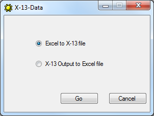
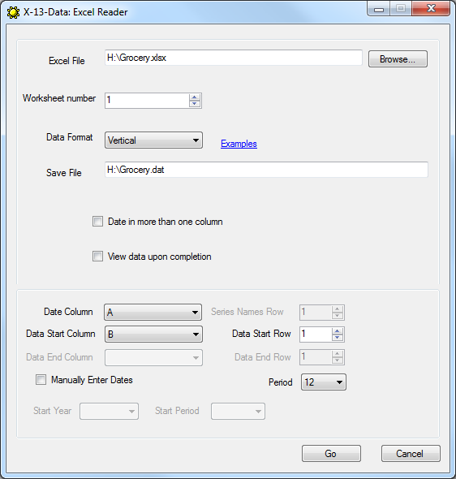
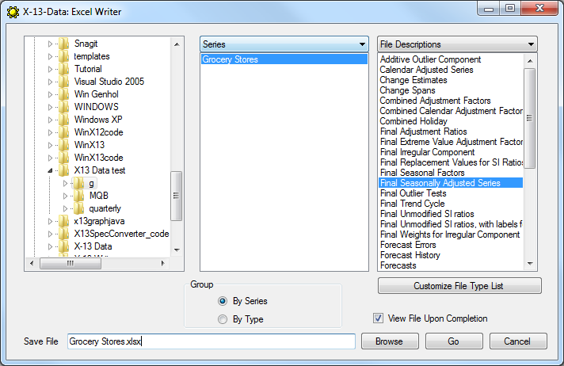
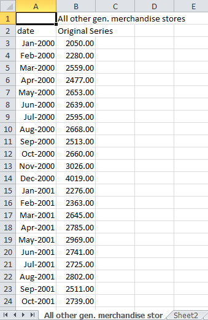
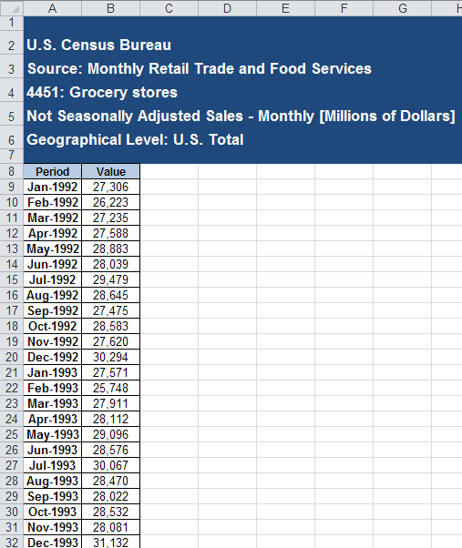
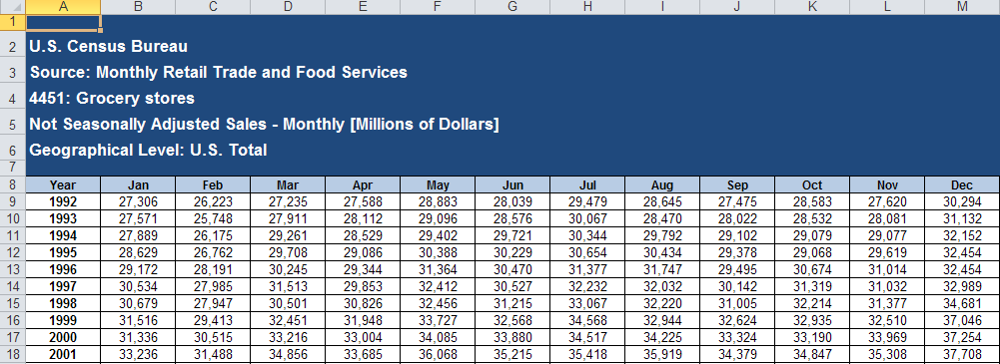
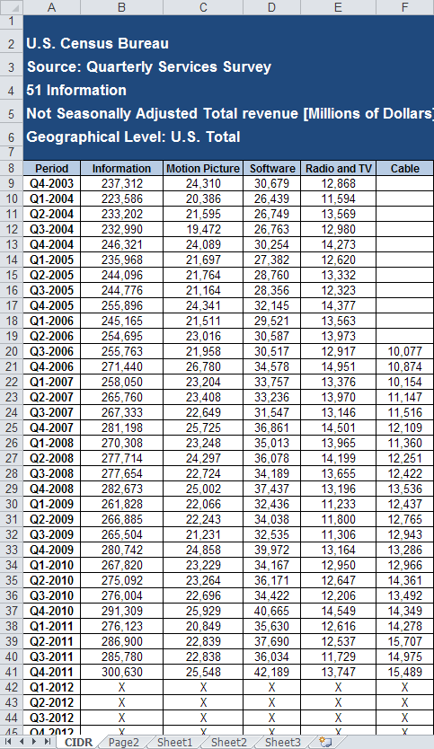
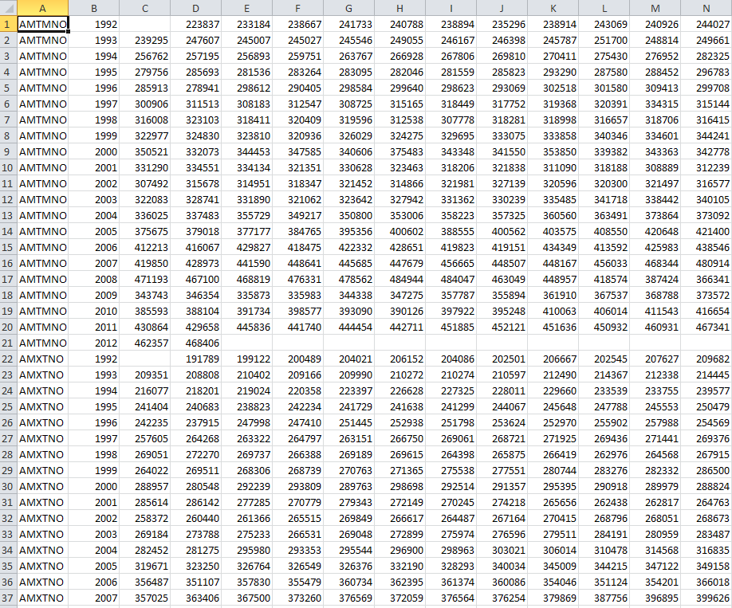
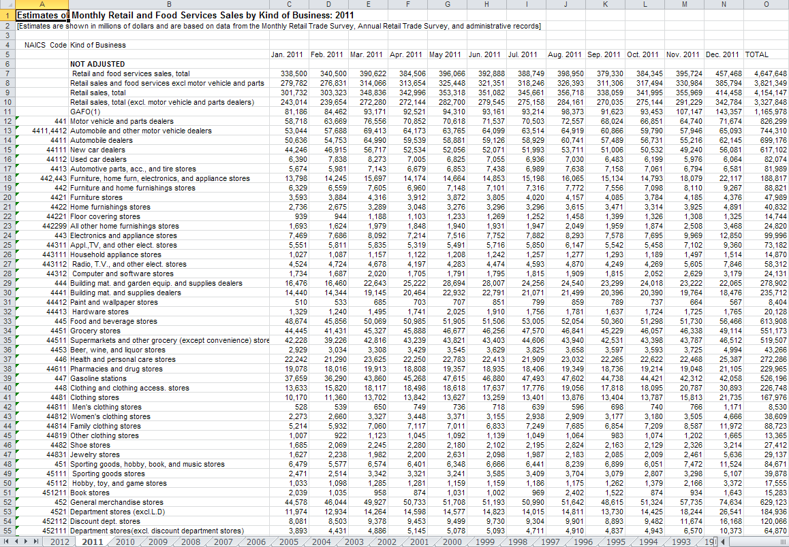
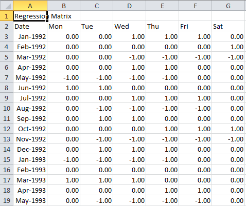

X-13-Data Version 2.0
Nikki Czaplicki
U.S. Census Bureau
August 26, 2014
Table of Contents
- Introduction
- Requirements
- Getting Started
- Convert from Excel to X-13
- Convert X-13 Output to an Excel file
- Data Formats
- Contact Information
- References
Input and output files from X-13ARIMA-SEATS(X-13A-S) (U.S. Census Bureau, 2015) must be text files; however,
many users store their data in Microsoft Excel files and would like their output in Microsoft Excel format.
X-13-Data is a tool that can:
- Convert data from Microsoft Excel to a text file in
datevalue format.
- Convert X-13ARIMA-SEATS output files in
x13save format to a Microsoft Excel file.
Return to contents.
X-13-Data has been tested on Windows XP, Windows 7, and Windows 8.
To run the program, Microsoft.NET Framework 3.5 must be installed
on your computer. It can be downloaded here.
X-13-Data also requires Microsoft Excel installed on your computer and has been tested with
Microsoft Excel 2007 and Microsoft Excel 2010.
Return to contents.
- Download
X13Data.zip.
- Unzip
X13Data.zip.
- Double click on
X13Data.exe to launch. The X-13-Data main screen will display.

Keyboard Shortcuts:
Go=Alt+g
Cancel=Alt+c
- From here, you can choose to convert your Excel data into a file that can be read by X-13ARIMA-SEATS
(see Section 4), or convert your X-13 output files to Excel files
(see Section 5).
Return to contents.
X-13-Data will read data in a Microsoft Excel file in a variety of formats (all described in Section 6)
and convert them to an X-13 data file in datevalue format. (See the X-13ARIMA-SEATS Reference Manual (2015) for
more information about datevalue and other accepted formats.)
- Select Excel to X-13 file from the X-13-Data main page and press Go. The X-13-Data Excel
Reader window will appear.
- Select a Microsoft Excel file by either typing the complete file name in the Excel File
text box or navigating to the file using the Browse button. Once an existing Excel file has been
selected, the other controls will become available; use them to select the output file, define the data
format, and locate the data within the spreadsheet, as described below.

Keyboard Shortcuts:
Browse=Alt+b
Go=Alt+g
Cancel=Alt+c
- Select the Excel worksheet that contains the data using the Worksheet Number box.
- Select the format that your data are in using the Data Format box.
See Data Formats below for more information on supported formats.
- If you are reading a single series with Vertical or Horizontal format, use the Save File
box to select a name for the data file that will be created.
- The file must have a .dat extension. X-13-Data will change or add the .dat extension, if necessary.
- If a file with the selected name already exists, a box will display asking if you would like to
overwrite or rename the file.
- If you are reading a file containing multiple series in Vertical-Multiple, Horizontal-Multiple or MRTS
format, each series will be saved to its own data file. These data files will be saved in the same directory
as the input Excel file.
- For Vertical-Multiple and Horizontal-Multiple formats, the data file names will be the series
names whose locations are specified using the Series Names Row/Column box.
- For MRTS format, the location of the series names does not need to be specified.
- For all of these formats, if a file with the same name already exists, the new file name will have
a numeric suffix. For example, if books.dat already exists in the same directory as the input
file, the new data file will be named books(2).dat.
- Check the Date in more than one column box if the dates are organized such that the year is in
the first date column and the period (months or quarters) is in the next column.
- Use the following controls to describe the location of the data within Excel file:
- Date Column: The column in which the dates begin.
- Data Start Column: The column in which the numeric data begin.
- Data Start Row: The row in which the numeric data begin.
- Series Names Row: The row containing the series names.
Only available for Vertical-Multiple format.
- Series Names Column: The column containing the series names. Only available for
Horizontal-Multiple format.
- Data End Column: The column where the user would like the data to end. Only available
for Regression Matrix format.
- Data End Row: The row where the user would like the data to end. Only available for
Regression Matrix format.
- Alternatively, you can specify the starting date manually by checking the Manually Enter Dates
box and then selecting the starting year using the Start Year box and the starting period using
the Start Period box. NOTE: Manually Enter Dates is not available for MRTS format.
- Use the Period box to select the frequency of the data: 12 for monthly data, 6 for bimonthly data,
4 for quarterly data, 2 for biannual data or 1 for annual data.
- X-13-Data will stop reading an Excel file when:
- Two consecutive non-numeric values in a series, e.g. two consecutive missing values. (Note
that in X-13ARIMA-SEATS, by default the value -99999 in a series is considered a missing
value; if your data has missing values, it is best to change them to this value before
attempting to convert the file.)
- An empty row or column is encountered
Return to contents.
The exact format of the Excel file varies depending on the type of file being converted and how many series are being converted at a time.
But the general format will include:
- the series name
- the file type
- labels for the date and data columns
- converted data
To convert X-13 output files to Excel files.
- Select X-13 Output to Excel file from the X-13-Data main page and press Go. The X-13-Data
Excel Writer window will appear.

Keyboard Shortcuts:
Browse=Alt+b
Go=Alt+g
Cancel=Alt+c
- Navigate to your directory using the file explorer tree on the left. This will populate the list of series in the
first list box. By default, series names will be displayed here. You can populate this list with
metafiles (text files containing lists of series) by selecting "Metafile"
from the drop-down box above the list.
- Select at least one item from the list. The second list will be populated with possible file types. If you select by series,
X-13-Data will display the file types that actually exist in the directory for the selected series. If you select by metafile,
X-13-Data will display all file types.
- Select one or more file types from the list on the right. You can select file types by file description or by file extension. Use the drop down menu
above the list on the right to switch between these two options. You can customize the order of the file types by clicking on the
Customize File Type List button. Click here to see an example of the Change File Type Order box.
- Select how the data wil be grouped in the Excel file. You can group data by series or by file type.
- Enter the name for the Microsoft Excel file in the save file box. If you would like to save the file to the currently selected directory, just
enter the file name. Otherwise, include the complete path and filename. This file must have a .xls or .xlsx extension. You can also navigate to the
location where you would like to save the file using the Browse button.
- Press the Go button to convert the files. See below for an example of a converted file.

A note about grouping.
Series can be grouped by series or file type. Each grouping will be on its own worksheet in the Excel file.
X-13ARIMA-SEATS can accommodate series with one of five periods: annual, biannual, quarterly, bimonthly, and monthly. X-13-Data can convert files
of all four periods at once if requested by the user. When organizing the output by series, this doesn't present a problem since all
file types for a single series will have the same period. However, when organizing the output by file types; there is the potential for different
periods for the same file type. In this case, X-13-Data creates a separate worksheet for each combination of file type and period.
In this case, the worksheet name will be the file type followed by the period.
Return to contents.
Vertical

The dates are in one or two columns and the data is in another column
Horizontal

Data is in a table, with each row containing one year of data. Each column contains data for one period.
Vertical-Multiple

Similar to Vertical for single series, each series is in its own column. There is a row containing the
names of each series. These are used to name the data files created by X-13-Data.
Horizontal-Multiple

One column contains the series names. (Here it is column A.) Each series is presented in its entirety before the
next series begins. Each row contains one year of data. Each month (quarter) is in its own column.
MRTS
MRTS refers to the U.S. Census Bureau's Monthly Retail Trade and Food Services report. It is available
at
http://www.census.gov/retail/

X-13-Data will create a data file for each unadjusted series from the MRTS report. You do not need to
specify any parameters when the MRTS format has been selected.
Regression Matrix

This is similar to Vertical Multiple format except that entire matrix will be saved into one data file. This type of file can be read
into X-13ARIMA-SEATS as a user-defined regressor.
Use the controls to specify the start and end rows and columns of the regression matrix. Data Start Column
and Data Start Row are required. Leave Data End Column and Data End Row at their default values to read
the entire matrix. Otherwise, use Data End Column and Data End Row to read a subset of the data in the Excel file.
Return to contents.
For more information or to report bugs, please contact Nikki Czaplicki.
Email: nicole.czaplicki@census.gov
Phone: 301-763-6206
Return to contents.
U.S. Census Bureau (2015).X-13ARIMA-SEATS,Version 1.1
U.S. Census Bureau (2015).
X-13ARIMA-SEATS Reference Manual,Version 1.1
Return to contents.
{kind=link}